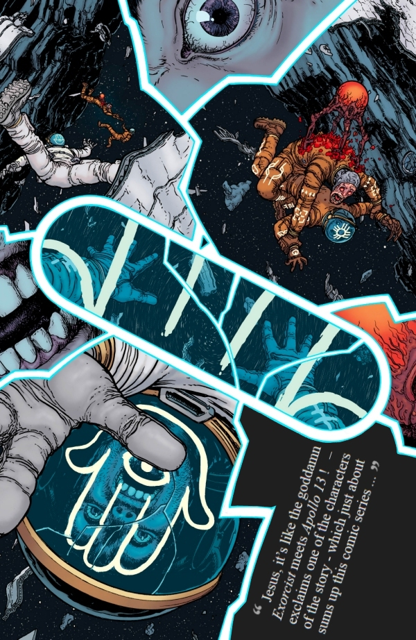

An astronomer kills his family, then himself, leaving cryptic messages scrawled in blood over the walls of his house. A Veiled Lady hunts her victims through people’s nightmares. And the ominous asteroid Xibalba edges ever closer on its collision course with Earth. But in the world of ‘Nameless’ nothing is quite what it seems…
Nameless, a six-issue comic book miniseries that combines science fiction, horror and mysticism genres, written by Grant Morrison, illustrated by Chris Burnham (with colouring by Nathan Fairbairn) and published by Image Comics, tells the story of an occultist known as ‘Nameless’ who is recruited by a consortium of eccentric billionaires in order to join a space mission in a last-ditch attempt to save the world.
The goal of the mission is asteroid 626000, a.k.a. Xibalba, that is on collision course with the planet Earth. If the calculations are correct, humanity has only 33 days before the extinction-event-sized rock impacts somewhere in the Pacific Ocean causing mega-tsunamis, global forest fires and poisonous acid rains on a scale never seen before.
The name of the asteroid could not be chosen better, as in Mayan mythology Xibalba (literally ‘place of fear’) is the name of the underworld, the place ruled by the death gods and their helpers.
What is even more concerning is the fact that the surface of this 14 x 6 miles big space mountain is scarred by a huge, 3-miles-long sigil. The glyph, carved into the side of the asteroid, marks the door to Anti-Universe or ‘Gate of Az’ as it is known to some.
‘Nameless’, an expert on esoteric matters, is brought in to join a small team of scientists at a base located on the dark side of the Moon, where he reveals that asteroid Xibalba is in fact a splinter of Marduk – our Solar System’s lost 5th planet formerly occupying the orbit between the planets Mars and Jupiter, that had been destroyed 65 million years ago at the end of an epic, fifteen-thousand-years-lasting, cosmic war that had been waged between the inhabitants of Marduk and god-like, life-hating, extra-dimensional alien beings from the Negative Universe.
After arriving at the base, the ‘Nameless’ learns that Dr. Croft, the local authority on occult matters, was brutally murdered by one of the crew who literally ripped off Dr. Croft’s head. The perpetrator, Andrea Blackstone, now in custody, is busying herself by drawing the ‘Gate of Az’ symbol, and writing sentences in an unknown language, on the walls of her cell – in her own blood.
While some of the astronauts decide to stay in the Moon-base mission control, the team of six astronauts, including the ‘Nameless’ who first adorns their spacesuits with protective magic symbols, board the space shuttle and approach the asteroid Xibalba to begin exploring it, unaware that possessed Andrea Blackstone in the meantime escaped from her confinement and butchered the whole crew of the mission control.
Upon close inspection, the surface of Xibalba seems to be covered in brutalist-style structures, whose function can only be guessed. The astronauts use a trio of drones to examine the surface of the asteroid in greater detail and to bring the Ixaxaar (a hexacontalith-shaped ‘key’) to a massive gate, which, after it opens, reveals a large corridor, leading to a huge descending staircase, whose proportions suggest that it might have been designed for some alien race of giants. The ‘Nameless’ strongly advises against descending the stairwell, but it is too late, because the three drones are already on their way, opening a room which the ‘Nameless’ perceives as a prison where Marduk’s titan race kept the prisoners of war from the Negative Universe, and unleashing on the unsuspecting crew the unspeakable horrors that lurk within…

Nameless has an intriguing (even though hard to follow in places) storyline, that keeps you on your tiptoes and leaves you always wondering whether the described events are real, or if it is all only a product of main character’s disturbed mind, forever affected by the gruesome events of that ill-fated night séance in the ‘Ghost House’. The comic also features some truly innovative layouts, but the overall impression is ultimately slightly spoiled by the not-so-up-to-scratch artwork.